pacman::p_load(phyloseq, vegan, patchwork, tidyverse)
source("code/R/plotting_aesthetics.R")
load("data/07_Alpha_Diversity/diversity_physeq.RData")
load("data/08_Beta_Diversity/trim_physeq.RData")
load("data/08_Beta_Diversity/abs_physeq.RData")
cyano_physeq <-
trim_physeq %>%
prune_taxa(taxa_sums(.) > 0, .) %>%
subset_taxa(., Phylum == "p__Cyanobacteriota")
cyano_melted <- cyano_physeq %>%
psmelt() %>%
filter(Depth_Class == "S")
asv_ids <- cyano_melted %>%
select(ASV, Genus) %>%
unique()Looking at Cyano Species Distributions
Goals of this document
Load Data and Packages
sum_cyanos <- cyano_melted %>%
filter(!is.na(Genus)) %>%
group_by(Genus) %>%
summarize(Max_Abund = max(Abundance),
Median_Abund = median(Abundance),
N_ASV = length(unique(ASV)),
Prevalence = sum(Abundance > 0)/n()) %>%
ungroup()
sum_cyanos_asv <- cyano_melted %>%
filter(!is.na(Genus)) %>%
group_by(Month, Genus, ASV) %>%
summarize(Total_Abund = sum(Abundance),
Max_Abund = max(Abundance),
Median_Abund = median(Abundance),
Prevalence = sum(Abundance > 0)/n()) %>%
ungroup()Species Co-correlation
Two separate goals:
top_cyano_asvs <- cyano_melted %>%
filter(Month != "May") %>%
group_by(ASV) %>%
summarize(Total_Abund = sum(Abundance),
Prevalence = sum(Abundance > 0) / n()) %>%
filter(Prevalence > 0.25) %>%
slice_max(n = 100, order_by = Total_Abund)
abs_melted <-
abs_physeq %>%
psmelt() %>%
filter(Depth_Class == "S", DNA_ID != "KH_D076", Month != "May",
!ASV %in% top_cyano_asvs)
rel_melted <-
diversity_physeq %>%
transform_sample_counts(., \(x)x/sum(x)) %>%
psmelt() %>%
filter(Depth_Class == "S", DNA_ID != "KH_D076", Month != "May",
!ASV %in% top_cyano_asvs)
rel_cy_melted <-
rel_melted %>%
filter(Phylum == "p__Cyanobacteriota")
top_asvs <-
abs_melted %>%
group_by(ASV) %>%
summarize(Total_Abund = sum(Abundance),
Prevalence = sum(Abundance > 0)/n()) %>%
filter(Prevalence > 0.25) %>%
slice_max(n = 1000, order_by = Total_Abund) %>%
pull(ASV)
wide_cy <-
cyano_melted %>%
filter(ASV %in% top_cyano_asvs$ASV) %>%
select(ASV, Rep_ID, Abundance) %>%
pivot_wider(names_from = ASV, values_from = Abundance)
wide_cy_rel <-
rel_cy_melted %>%
filter(ASV %in% top_cyano_asvs$ASV) %>%
select(ASV, Rep_ID, Abundance) %>%
pivot_wider(names_from = ASV, values_from = Abundance)
prok_names <- colnames(wide_cy)[-1]
# cy_cor_res <- cyano_melted %>%
# filter(ASV %in% top_cyano_asvs$ASV) %>%
# select(ASV, Rep_ID, Abundance) %>%
# pivot_wider(names_from = ASV, values_from = Abundance) %>%
# rstatix::cor_test(vars = prok_names)
#
# save(cy_cor_res, file = "data/10_Cyano_Species_Distribution/cy_cor_res.RData")
load("data/10_Cyano_Species_Distribution/cy_cor_res.RData")
#
# rel_cy_cor_res <- rel_cy_melted %>%
# filter(ASV %in% top_cyano_asvs$ASV) %>%
# select(ASV, Rep_ID, Abundance) %>%
# pivot_wider(names_from = ASV, values_from = Abundance) %>%
# rstatix::cor_test(vars = prok_names)
#
# save(rel_cy_cor_res, file = "data/10_Cyano_Species_Distribution/rel_cy_cor_res.RData")
load("data/10_Cyano_Species_Distribution/rel_cy_cor_res.RData")library(ggraph)
library(igraph)
library(tidygraph)
# High correlation
cy_cor_mat <-
cy_cor_res %>%
mutate(adjust_p = p.adjust(p, method = "holm")) %>%
mutate(cor = ifelse(cor>=0.8&adjust_p<0.01, cor, 0)) %>%
select(var1, var2, cor) %>%
pivot_wider(names_from = var2, values_from = cor) %>%
column_to_rownames("var1") %>%
as.matrix()
adj_mat <- igraph::graph_from_adjacency_matrix(cy_cor_mat, weighted=T, mode="undirected", diag=F)
graph <- as_tbl_graph(adj_mat) %>%
left_join(asv_ids, by = c("name" = "ASV")) %>%
left_join(top_cyano_asvs, by = c("name" = "ASV")) %>%
#filter(!is.na(Genus)) %>%
mutate(Centrality = centrality_degree(mode = 'in'),
Genus = str_remove(Genus, "g__"),
Genus = ifelse(is.na(Genus), "(Rare/Unknown)", Genus),
Genus = ifelse(Total_Abund < 50000, "(Rare/Unknown)", Genus),
Genus = factor(Genus, levels = names(cyano_genus_colors))
)
set.seed(314)
ggraph(graph, layout = "fr")+
geom_edge_fan(aes(alpha = weight), linewidth = 1,show.legend = FALSE) +
geom_node_point(aes(color = Genus, size = Total_Abund)) +
scale_size_continuous(labels = scales::unit_format(unit = "M", scale = 1e-6))+
scale_color_manual(values = cyano_genus_colors) +
guides(color = guide_legend(override.aes = list(size = 5))) +
labs(size = "Total Abundance\n(cells/ml)") +
theme(legend.title = element_text(size = 12),
legend.position = "left")
ggsave(filename = "figures/10_Cyano_Species_Distribution/Fig6_A.png", dpi = 300, height = 6, width = 8)
rel_cy_cor_mat <-
rel_cy_cor_res %>%
mutate(adjust_p = p.adjust(p, method = "holm")) %>%
mutate(cor = ifelse(cor>=0.8&adjust_p<0.01, cor, 0)) %>%
select(var1, var2, cor) %>%
pivot_wider(names_from = var2, values_from = cor) %>%
column_to_rownames("var1") %>%
as.matrix()
rel_adj_mat <- igraph::graph_from_adjacency_matrix(rel_cy_cor_mat, weighted=T, mode="undirected", diag=F)
rel_graph <- as_tbl_graph(rel_adj_mat) %>%
left_join(asv_ids, by = c("name" = "ASV")) %>%
left_join(top_cyano_asvs, by = c("name" = "ASV")) %>%
#filter(!is.na(Genus)) %>%
mutate(Centrality = centrality_degree(mode = 'in'),
Genus = str_remove(Genus, "g__"),
Genus = ifelse(is.na(Genus), "(Rare/Unknown)", Genus),
Genus = ifelse(Total_Abund < 50000, "(Rare/Unknown)", Genus),
Genus = factor(Genus, levels = names(cyano_genus_colors))
)
set.seed(314)
ggraph(rel_graph, layout = "fr")+
geom_edge_fan(aes(alpha = weight), show.legend = FALSE, linewidth = 1) +
geom_node_point(aes(color = Genus, size = Total_Abund)) +
scale_size_continuous(labels = scales::unit_format(unit = "M", scale = 1e-6))+
scale_color_manual(values = cyano_genus_colors) +
guides(color = guide_legend(override.aes = list(size = 5))) +
labs(size = "Total Abundance\n(cells/ml)") +
theme(legend.title = element_text(size = 12),
legend.position = "left")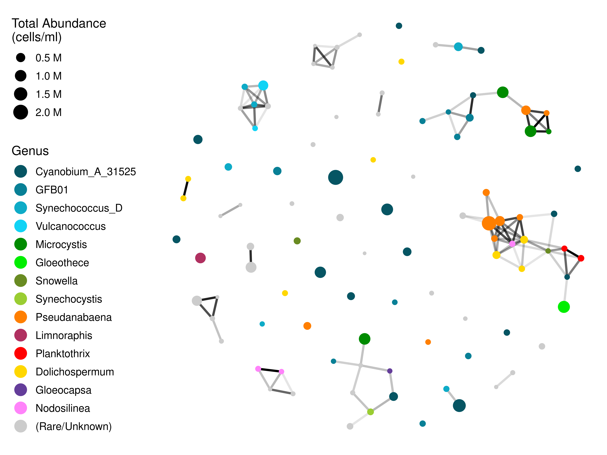
ggsave(filename = "test.png", dpi = 300, height = 6, width = 8)
clustered <- igraph::cluster_edge_betweenness(graph)
members <- igraph::membership(clustered)
mem_df <- data.frame(name = names(members),
membership = members)
top_mem<-
mem_df %>%
count(membership) %>%
slice_max(n = 3, order_by = n) %>%
pull(membership)
good_mem_df <-
mem_df %>%
mutate(membership = ifelse(membership %in% top_mem, membership, NA),
membership = factor(membership, labels = c(1:4)))
mem_graph <-
graph %>%
left_join(good_mem_df)
set.seed(314)
ggraph(mem_graph, layout = "fr")+
geom_edge_fan(aes(alpha = weight), show.legend = FALSE) +
geom_node_point(aes(color = membership, size = Total_Abund)) +
guides(color = guide_legend(override.aes = list(size = 5)),
size = guide_none())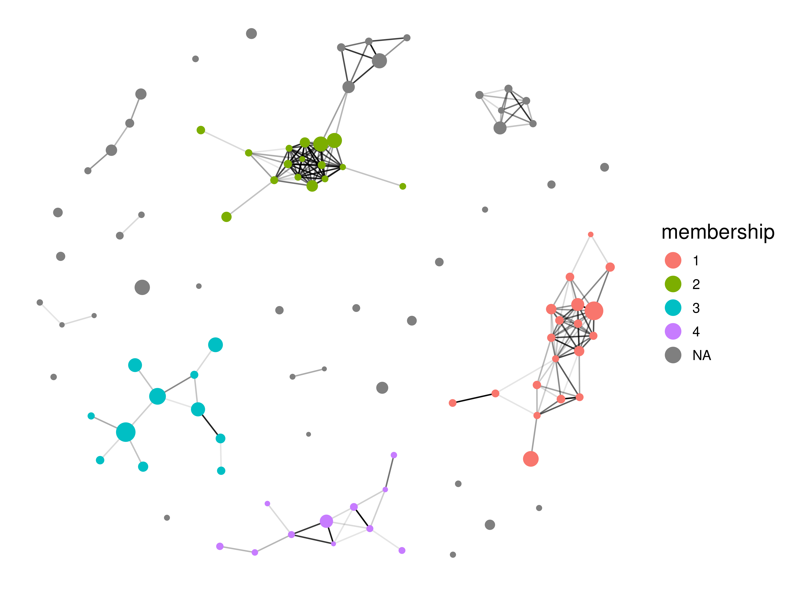
mem_asvs <- good_mem_df %>%
filter(!is.na(membership)) %>%
rename(ASV = name) %>%
filter(membership %in% c(1,2,3))pacman::p_load(sf, terra, tmap, gstat, install = FALSE)
# Define some shapes and objects
raw_erie <- read_sf("data/spatial_imports/hydro_p_LakeErie/hydro_p_LakeErie.shp") %>%
st_transform(crs = "EPSG:4326")
erie_outline <- raw_erie %>%
st_union()
mem_cy_sf <-
cyano_melted %>%
select(Rep_ID, Abundance, ASV, Latitude, Longitude, Month) %>%
left_join(mem_asvs) %>%
filter(!is.na(membership)) %>%
group_by(Rep_ID, Month, Latitude, Longitude, membership) %>%
summarize(mem_abund = sum(Abundance)) %>%
mutate(Month = factor(Month, levels = c("May","August","September"))) %>%
st_as_sf(coords = c("Longitude","Latitude"), crs = "EPSG:4326")
mem_cy_sf %>%
dplyr::filter(Month != "May") %>%
mutate(membership = factor(membership, levels = c(2,1,3))) %>%
ggplot() +
geom_sf(data = erie_outline, fill = NA) +
geom_sf(aes(size = mem_abund, color = mem_abund), alpha = 1) +
facet_grid(membership~Month)+
scale_color_distiller(palette = "Spectral", limits = c(0,1.6e6), breaks = c(0, 0.5e6, 1e6, 1.5e6), labels = scales::unit_format(unit = "M", scale = 1e-6)) +
scale_size_continuous(limits = c(0,1.6e6), breaks = c(0, 0.5e6, 1e6, 1.5e6), labels = scales::unit_format(unit = "M", scale = 1e-6)) +
labs(color = "Cluster\nAbundance\n(cells/ml)", size = "Cluster\nAbundance\n(cells/ml)") +
guides(color= guide_legend(), size=guide_legend()) +
theme(axis.line = element_blank(),
axis.text = element_blank(),
axis.ticks = element_blank(),
strip.text.y = element_blank(),
legend.title = element_text(size = 12),
strip.text = element_text(size = 12))
#ggsave(filename = "test.png", width = 6, height= 6, dpi = 300)corrs <- seq(from = 0.5, to = 0.95, by = 0.05)
names(corrs) <- corrs
graphs <- map(corrs, \(x){
cy_cor_mat <-
cy_cor_res %>%
mutate(cor = ifelse(cor>=x&p<0.01, cor, 0)) %>%
select(var1, var2, cor) %>%
pivot_wider(names_from = var2, values_from = cor) %>%
column_to_rownames("var1") %>%
as.matrix()
adj_mat <- igraph::graph_from_adjacency_matrix(cy_cor_mat, weighted=T, mode="undirected", diag=F)
graph <- as_tbl_graph(adj_mat)
})
mods <- map(graphs, \(x){
clustered <- igraph::cluster_edge_betweenness(x)
igraph::modularity(clustered)
}) %>%
unlist()
data.frame(Corr = corrs,
Modularity = mods) %>%
ggplot(aes(x = corrs, y = Modularity)) +
geom_line() +
geom_point(size = 4) +
labs(x = "Minimum Correlation")
map(graphs, \(x){
igraph::clique_num(x)
}) %>% unlist() 0.5 0.55 0.6 0.65 0.7 0.75 0.8 0.85 0.9 0.95
17 15 14 13 13 11 11 10 7 5 Correlating Cyano Abund vs. Heterotroph Abund
Going by Clusters
small_phy <- abs_physeq %>%
subset_samples(Month != "May") %>%
subset_samples(Depth_Class == "S") %>%
subset_samples(DNA_ID != "KH_D076")
save(small_phy, file = "small_phy.RData")
#
# het_alpha_rarefaction <-
#
# map(c(1:100), \(x) {
# rare_physeq <- small_phy %>%
# rarefy_even_depth(rngseed = x, replace = FALSE) %>%
# subset_taxa(., Phylum != "p__Cyanobacteriota")
#
# alpha_diversity <-
# estimate_richness(small_phy, measure = c("Shannon", "Observed"))
#
# H <- alpha_diversity$Shannon
# S1 <- alpha_diversity$Observed
# S <- log(S1)
# alpha_diversity$evenness <- H / S
#
# res <- picante::pd(samp = as.data.frame(t(otu_table(small_phy))),
# tree = phy_tree(small_phy),
# include.root = FALSE) %>%
# rownames_to_column("DNA_ID") %>%
# select(DNA_ID, PD)
#
#
# alpha_diversity %>%
# rownames_to_column("DNA_ID") %>%
# select(DNA_ID, Observed, evenness, Shannon) %>%
# left_join(res)
# })
#
#
# save(het_alpha_rarefaction, file = "data/10_Cyano_Species_Distribution/het_alpha_rarefaction.RData")
load("data/10_Cyano_Species_Distribution/het_alpha_rarefaction.RData")
alpha_diversity <- het_alpha_rarefaction %>%
bind_rows() %>%
group_by(DNA_ID) %>%
summarize(het_richness = mean(Observed, na.rm = TRUE),
het_evenness = mean(evenness, na.rm = TRUE),
het_shannon = mean(Shannon, na.rm = TRUE),
het_fpd = mean(PD, na.rm = TRUE))
mem_cy_abunds <-
cyano_melted %>%
select(DNA_ID, Abundance, ASV, avg_cells_per_ml) %>%
left_join(mem_asvs) %>%
filter(!is.na(membership)) %>%
group_by(DNA_ID, membership) %>%
summarize(
Mem_Abund = sum(Abundance),
Mem_Abund_Rel = sum(Abundance) / mean(avg_cells_per_ml)
)
total_cy_stats <- cyano_melted %>%
filter(Abundance > 0) %>%
group_by(DNA_ID) %>%
summarize(
Mem_Abund = sum(Abundance),
Mem_Abund_Rel = sum(Abundance) / mean(avg_cells_per_ml)
) %>%
mutate(membership = "Total")
cy_stats <- cyano_melted %>%
filter(Abundance > 0) %>%
group_by(DNA_ID) %>%
summarize(Cy_Richness = n(),
Cy_Abundance = sum(Abundance))
all_cy_stats <- rbind(mem_cy_abunds, total_cy_stats) %>%
left_join(cy_stats)
joined <-
abs_physeq %>%
sample_data() %>%
data.frame() %>%
filter(Depth_Class == "S", DNA_ID != "KH_D076", Month != "May") %>%
left_join(all_cy_stats) %>%
left_join(alpha_diversity)
joined %>%
mutate(
Month = factor(Month, levels = c("May", "August", "September")),
membership = factor(
membership,
levels = c("Total", "2", "1", "3"),
labels = c("Total", "C1: Microcystis", "C2: Pseudanabaena", "C3: Cyanobium")
)
) %>%
ggplot(aes(x = Mem_Abund, y = het_richness)) +
geom_point(aes(color = Month)) +
ggpubr::stat_cor(
aes(label = after_stat(r.label)),
show.legend = FALSE,
method = "spearman",
cor.coef.name = "rho"
) +
scale_color_manual(values = month_colors) +
scale_x_continuous(labels = scales::unit_format(unit = "M", scale = 1e-6)) +
facet_wrap( ~ membership, scale = "free_x", nrow = 1) +
theme(legend.position = "right",
aspect.ratio = 1,
axis.text = element_text(size = 8)) +
labs(x = "Cyano Abundance/mL", y = "Non-Cyano\nRichness") 
joined %>%
mutate(Month = factor(Month, levels = c("May","August","September")),
membership = factor(membership, levels = c("Total", "2","1","3"),
labels = c("Total","C1: Microcystis","C2: Pseudanabaena", "C3: Cyanobium"))) %>%
ggplot(aes(x = Mem_Abund, y = het_evenness)) +
geom_point(aes(color = Month)) +
ggpubr::stat_cor(
aes(label = after_stat(r.label)),
show.legend = FALSE,
method = "spearman",
cor.coef.name = "rho"
) +
scale_color_manual(values = month_colors) +
scale_x_continuous(labels = scales::unit_format(unit = "M", scale = 1e-6))+
facet_wrap(~membership, scale = "free_x", nrow = 1) +
theme(legend.position = "right",
aspect.ratio = 1,
axis.text = element_text(size = 8)) +
labs(x = "Cyano Abundance/mL", y = "Non-Cyano\nEvenness") 
joined %>%
mutate(Month = factor(Month, levels = c("May","August","September")),
membership = factor(membership, levels = c("Total", "2","1","3"),
labels = c("Total","C1: Microcystis","C2: Pseudanabaena", "C3: Cyanobium"))) %>%
ggplot(aes(x = Mem_Abund, y = avg_cells_per_ml - total_chl_counts)) +
geom_point(aes(color = Month)) +
ggpubr::stat_cor(
aes(label = after_stat(r.label)),
show.legend = FALSE,
method = "spearman",
cor.coef.name = "rho"
) +
scale_color_manual(values = month_colors) +
scale_x_continuous(labels = scales::unit_format(unit = "M", scale = 1e-6))+
scale_y_continuous(labels = scales::unit_format(unit = "M", scale = 1e-6))+
facet_wrap(~membership, scale = "free_x", nrow = 1) +
theme(legend.position = "right",
aspect.ratio = 1,
axis.text = element_text(size = 8)) +
labs(x = "Cyano Abundance/mL", y = "Non-Cyano\nAbundance/mL") 
joined %>%
mutate(Month = factor(Month, levels = c("May","August","September")),
membership = factor(membership, levels = c("Total", "2","1","3"),
labels = c("Total","C1: Microcystis","C2: Pseudanabaena", "C3: Cyanobium"))) %>%
ggplot(aes(x = Mem_Abund, y = het_rsg_per_ml)) +
geom_point(aes(color = Month)) +
ggpubr::stat_cor(
aes(label = after_stat(r.label)),
show.legend = FALSE,
method = "spearman",
cor.coef.name = "rho"
) +
scale_color_manual(values = month_colors) +
scale_x_continuous(labels = scales::unit_format(unit = "M", scale = 1e-6))+
scale_y_continuous(labels = scales::unit_format(unit = "M", scale = 1e-6))+
facet_wrap(~membership, scale = "free_x", nrow = 1) +
theme(legend.position = "right",
aspect.ratio = 1,
axis.text = element_text(size = 8)) +
labs(x = "Cyano Abundance/mL", y = "RSG+/mL") 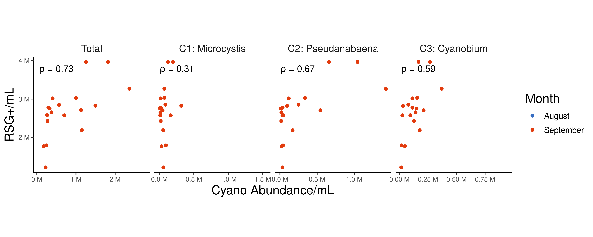
joined %>%
mutate(Month = factor(Month, levels = c("May","August","September")),
membership = factor(membership, levels = c("Total", "2","1","3"),
labels = c("Total","C1: Microcystis","C2: Pseudanabaena", "C3: Cyanobium"))) %>%
ggplot(aes(x = Mem_Abund, y = rsg_perc_pos)) +
geom_point(aes(color = Month)) +
ggpubr::stat_cor(
aes(label = after_stat(r.label)),
show.legend = FALSE,
method = "spearman",
cor.coef.name = "rho"
) +
scale_color_manual(values = month_colors) +
scale_x_continuous(labels = scales::unit_format(unit = "M", scale = 1e-6))+
facet_wrap(~membership, scale = "free_x", nrow = 1) +
theme(legend.position = "right",
aspect.ratio = 1,
axis.text = element_text(size = 8)) +
labs(x = "Cyano Abundance/mL", y = "% RSG+") 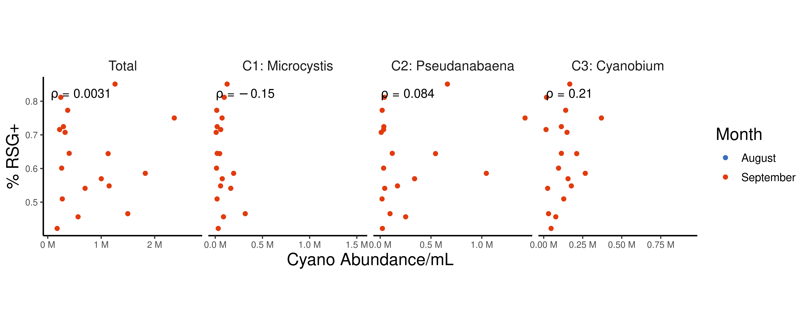
flow_abund_plot <- joined %>%
mutate(Month = factor(Month, levels = c("May","August","September")),
membership = factor(membership, levels = c("Total", "2","1","3"),
labels = c("Total","C1: Microcystis","C2: Pseudanabaena", "C3: Cyanobium"))) %>%
dplyr::filter(membership == "Total") %>%
ggplot(aes(x = total_chl_counts, y = avg_cells_per_ml - total_chl_counts)) +
geom_point(aes(color = Month)) +
ggpubr::stat_cor(show.legend = FALSE, method = "spearman",
cor.coef.name = "rho",
p.accuracy = 0.001) +
scale_color_manual(values = month_colors) +
scale_x_continuous(labels = scales::unit_format(unit = "M", scale = 1e-6))+
scale_y_continuous(labels = scales::unit_format(unit = "M", scale = 1e-6))+
theme(legend.position = "right",
aspect.ratio = 1,
axis.text = element_text(size = 8)) +
labs(x = "Cyano Abundance/mL\n(flow counts)", y = "Non-Cyano Abundance/mL\n(flow counts)")
flow_rsg_plot <- joined %>%
mutate(Month = factor(Month, levels = c("May","August","September")),
membership = factor(membership, levels = c("Total", "2","1","3"),
labels = c("Total","C1: Microcystis","C2: Pseudanabaena", "C3: Cyanobium"))) %>%
dplyr::filter(membership == "Total") %>%
ggplot(aes(x = total_chl_counts, y = het_rsg_per_ml)) +
geom_point(aes(color = Month)) +
ggpubr::stat_cor(show.legend = FALSE, method = "spearman",
cor.coef.name = "rho",
p.accuracy = 0.001) +
scale_color_manual(values = month_colors) +
scale_x_continuous(labels = scales::unit_format(unit = "M", scale = 1e-6))+
scale_y_continuous(labels = scales::unit_format(unit = "M", scale = 1e-6))+
theme(legend.position = "right",
aspect.ratio = 1,
axis.text = element_text(size = 8)) +
labs(x = "Cyano Abundance/mL\n(flow counts)", y = "Non-Cyano RSG+/mL\n(flow counts)")
flow_abund_plot + flow_rsg_plot +
plot_layout(guides = "collect")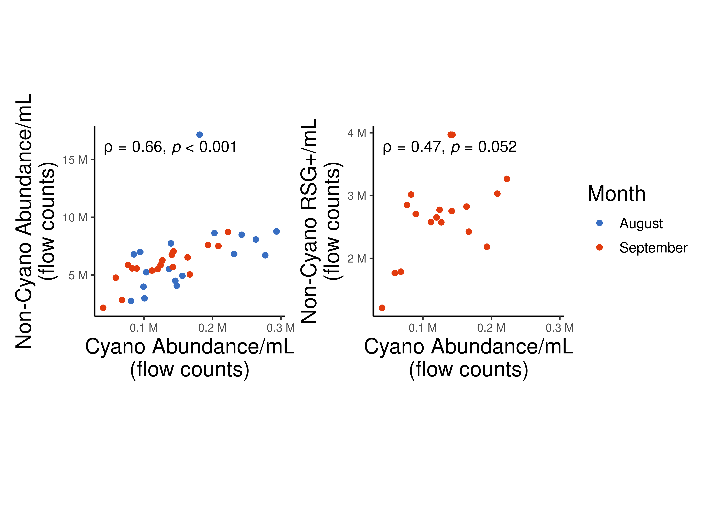
ggsave("test.png", width = 8, height = 4)abs_physeq %>%
psmelt() %>%
filter(Phylum == "p__Cyanobacteriota") %>%
group_by(DNA_ID, Month, total_chl_counts) %>%
summarize(cy_abund = sum(Abundance)) %>%
ggplot(aes(x = total_chl_counts, y = cy_abund)) +
geom_point() +
ggpubr::stat_cor(show.legend = FALSE, method = "spearman",
cor.coef.name = "rho",
p.accuracy = 0.001) +
scale_x_log10(labels = scales::unit_format(unit = "M", scale = 1e-6))+
scale_y_log10(labels = scales::unit_format(unit = "M", scale = 1e-6))+
labs(x = "Cyano Abundance/mL\n(flow counts)", y = "Cyano Abundance/mL\n(whole community estimate)") 
ggsave("test.png", width = 5, height = 5)joined %>%
select(membership, Mem_Abund,het_richness, het_shannon, het_fpd, het_evenness) %>%
group_by(membership) %>%
rstatix::cor_test(vars = Mem_Abund, vars2 = starts_with("het"), method = "spearman", use = "pairwise.complete.obs") %>%
rstatix::adjust_pvalue() %>%
mutate(var2 = factor(var2, levels = c("het_evenness","het_fpd","het_shannon","het_richness"),
labels = c("Evenness", "Faith's PD","Shannon", "Richness")),
membership = factor(membership, levels = c("Total", "2","1","3"),
labels = c("Total","C1: Microcystis","C2: Pseudanabaena", "C3: Cyanobium"))) %>%
ggplot(aes(x = membership, y = var2, fill = cor, alpha = p.adj < 0.05)) +
geom_tile() +
geom_text(aes(label = round(cor, 2))) +
scale_fill_distiller(palette = "Spectral") +
scale_alpha_manual(values = c(0.4,1)) +
scale_y_discrete(expand = expansion(0)) +
scale_x_discrete(expand = expansion(0)) +
guides(alpha = "none") +
labs(y="Non-Cyano Metric",
fill = "Spearman's R")+
theme(axis.title.x = element_blank(),
axis.line = element_blank(),
axis.ticks = element_blank(),
axis.text.x = element_text(angle = 330, vjust = 1, hjust = 0, size = 12))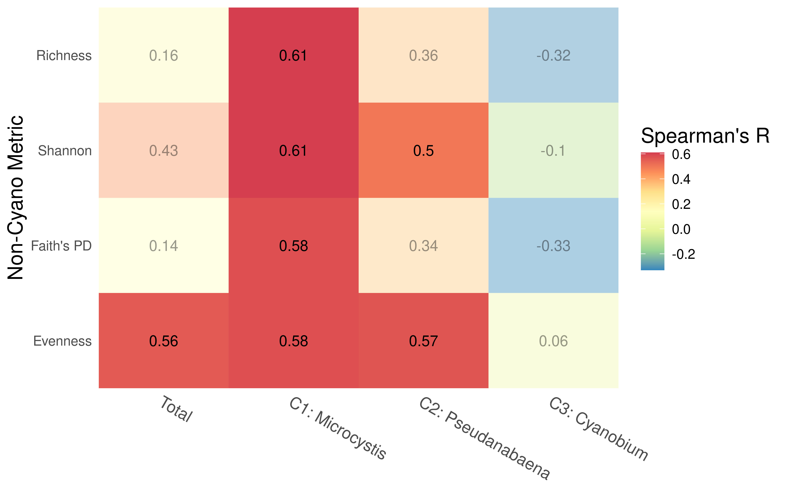
joined %>%
mutate(het_abund = avg_cells_per_ml - total_chl_counts,
het_rich = Richness - Cy_Richness,
het_even = het_evenness,
het_rsg = het_rsg_per_ml,
het_rsg_perc = het_rsg_perc_pos) %>%
select(membership, Mem_Abund_Rel,het_abund, het_rich, het_even, het_rsg, het_rsg_perc) %>%
group_by(membership) %>%
rstatix::cor_test(vars = Mem_Abund_Rel, vars2 = starts_with("het"), method = "spearman", use = "pairwise.complete.obs") %>%
rstatix::adjust_pvalue() %>%
mutate(var2 = factor(var2, levels = c("het_rsg_perc","het_rsg","het_abund","het_even","het_rich"),
labels = c("% RSG +", "Total RSG+", "Abundance","Evenness","Richness")),
membership = factor(membership, levels = c("Total", "2","1","3"),
labels = c("Total","C1: Microcystis","C2: Pseudanabaena", "C3: Cyanobium"))) %>%
ggplot(aes(x = membership, y = var2, fill = cor, alpha = p.adj < 0.05)) +
geom_tile() +
geom_text(aes(label = round(cor, 2))) +
scale_fill_distiller(palette = "Spectral") +
scale_alpha_manual(values = c(0.4,1)) +
scale_y_discrete(expand = expansion(0)) +
scale_x_discrete(expand = expansion(0)) +
guides(alpha = "none") +
labs(y="Non-Cyano Metric",
fill = "Spearman's R")+
theme(axis.title.x = element_blank(),
axis.line = element_blank(),
axis.ticks = element_blank(),
axis.text.x = element_text(angle = 330, vjust = 1, hjust = 0, size = 12))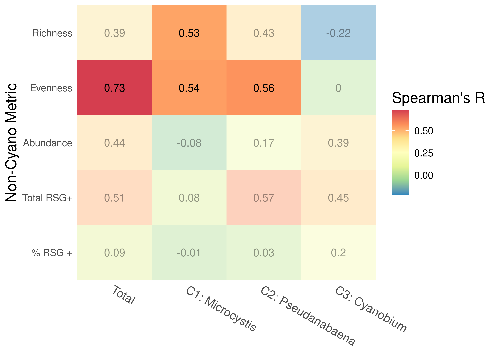
ggsave("test.png", width = 8, height = 5)All of them together
joined %>%
mutate(het_abund = avg_cells_per_ml - total_chl_counts,
het_rich = het_richness,
het_even = het_evenness,
het_rsg = het_rsg_per_ml,
het_rsg_perc = het_rsg_perc_pos,
tn_ratio = (tn_ug_n_l/14) / (tp_ug_p_l/31)) %>%
select(Mem_Abund, membership, ctd_temperature, tn_ug_n_l, tp_ug_p_l, tn_ratio, het_abund, het_rich, het_even, het_rsg, het_rsg_perc) %>%
pivot_wider(names_from = membership, values_from = Mem_Abund, names_prefix = "Cy_Mem_") %>%
pivot_longer(c(ctd_temperature:tn_ratio, Cy_Mem_1:Cy_Mem_Total), names_to = "Test", values_to = "Value") %>%
group_by(Test) %>%
rstatix::cor_test(vars = Value, vars2 = starts_with("het"), method = "spearman", use = "pairwise.complete.obs") %>%
rstatix::adjust_pvalue() %>%
mutate(var2 = factor(var2, levels = c("het_rsg_perc","het_rsg","het_abund","het_even","het_rich"),
labels = c("% RSG +", "RSG+ /mL", "Abundance","Evenness","Richness")),
Test = factor(Test, levels = c("Cy_Mem_Total","Cy_Mem_2","Cy_Mem_1","Cy_Mem_3", "ctd_temperature", "tn_ug_n_l","tp_ug_p_l","tn_ratio"),
labels = c("Total","C1: Microcystis","C2: Pseudanabaena", "C3: Cyanobium", "Temperature","Total N","Total P","Molar N:P"))) %>%
ggplot(aes(x = Test, y = var2, fill = cor, alpha = p.adj < 0.05)) +
geom_tile() +
geom_text(aes(label = round(cor, 2))) +
scale_fill_distiller(palette = "Spectral") +
scale_alpha_manual(values = c(0.2,1)) +
scale_y_discrete(expand = expansion(0)) +
scale_x_discrete(expand = expansion(0)) +
guides(alpha = "none") +
labs(y="Non-Cyano Metric",
fill = "Spearman's R")+
theme(axis.title.x = element_blank(),
axis.line = element_blank(),
axis.ticks = element_blank(),
axis.text.x = element_text(angle = 330, vjust = 1, hjust = 0, size = 12))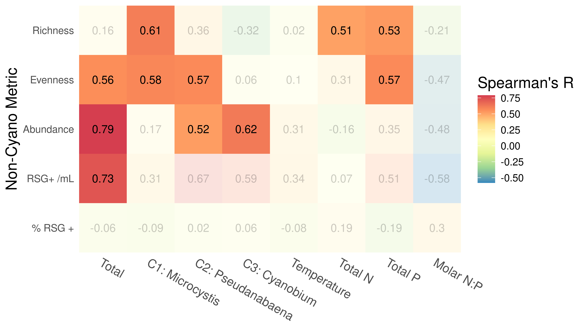
ggsave("test.png", width = 8, height = 4.5)joined %>%
mutate( membership = factor(membership, levels = c("Total", "2","1","3"),
labels = c("Total","C1: Microcystis","C2: Pseudanabaena", "C3: Cyanobium"))) %>%
ggplot(aes(x = tp_ug_p_l, y = Mem_Abund)) +
geom_point(aes(color = Month)) +
facet_wrap(~membership, nrow = 1) +
scale_y_log10(labels = scales::unit_format(unit = "M", scale = 1e-6)) +
ggpubr::stat_cor(show.legend = FALSE, method = "spearman",
cor.coef.name = "rho",
p.accuracy = 0.001) +
scale_color_manual(values = month_colors) +
labs(y = "Cyano Cluster Abundance/mL", x = "TP (ug P/L)") +
theme(legend.position = "right",
aspect.ratio = 1,
axis.text = element_text(size = 8))
ggsave("test.png", width = 6, height = 5)
joined %>%
mutate( membership = factor(membership, levels = c("Total", "2","1","3"),
labels = c("Total","C1: Microcystis","C2: Pseudanabaena", "C3: Cyanobium"))) %>%
ggplot(aes(x = tn_ug_n_l, y = Mem_Abund)) +
geom_point(aes(color = Month)) +
facet_wrap(~membership, nrow = 1) +
scale_y_log10(labels = scales::unit_format(unit = "M", scale = 1e-6)) +
ggpubr::stat_cor(show.legend = FALSE, method = "spearman",
cor.coef.name = "rho",
p.accuracy = 0.001) +
scale_color_manual(values = month_colors) +
labs(y = "Cyano Cluster Abundance/mL", x = "TN (ug N/L)") +
theme(legend.position = "right",
aspect.ratio = 1,
axis.text = element_text(size = 8))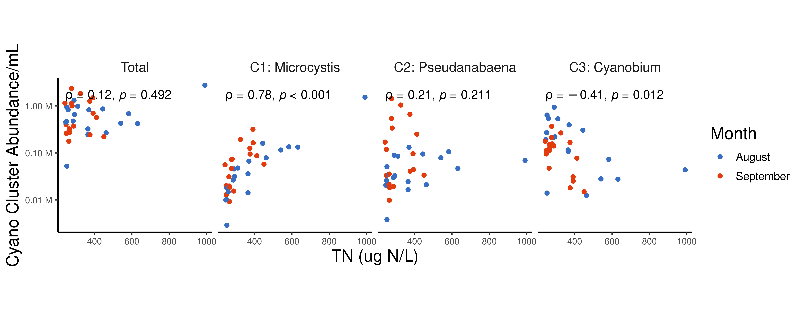
ggsave("test.png", width = 10, height = 4)joined %>%
filter(membership=="Total") %>%
ggplot(aes(x = ctd_temperature, y = avg_cells_per_ml-total_chl_counts)) +
geom_point(aes(color = Month)) +
ggpubr::stat_cor(aes(label = after_stat(r.label)), show.legend = FALSE, method = "spearman", cor.coef.name = "rho") +
scale_color_manual(values = month_colors) +
scale_y_continuous(labels = scales::unit_format(unit = "M", scale = 1e-6)) +
theme(legend.position = "none",
aspect.ratio = 1,
strip.text = element_blank()) +
labs(x = "Temperature (°C)", y = "Heterotroph\nAbundance / mL ")
joined %>%
filter(membership=="Total") %>%
ggplot(aes(x = ctd_temperature, y = het_richness)) +
geom_point(aes(color = Month)) +
ggpubr::stat_cor(aes(label = after_stat(r.label)), show.legend = FALSE, method = "spearman", cor.coef.name = "rho") +
scale_color_manual(values = month_colors) +
theme(legend.position = "none",
aspect.ratio = 1,
strip.text = element_blank()) +
labs(x = "Temperature (°C)", y = "Heterotroph Richness")
joined %>%
filter(membership=="Total") %>%
ggplot(aes(x = ctd_temperature, y = het_evenness)) +
geom_point(aes(color = Month)) +
ggpubr::stat_cor(aes(label = after_stat(r.label)), show.legend = FALSE, method = "spearman", cor.coef.name = "rho") +
scale_color_manual(values = month_colors) +
theme(legend.position = "none",
aspect.ratio = 1,
strip.text = element_blank()) +
labs(x = "Temperature (°C)", y = "Heterotroph Evenness")
joined %>%
filter(membership=="Total") %>%
ggplot(aes(x = ctd_temperature, y = het_rsg_per_ml)) +
geom_point(aes(color = Month)) +
ggpubr::stat_cor(aes(label = after_stat(r.label)), show.legend = FALSE, method = "spearman", cor.coef.name = "rho") +
scale_color_manual(values = month_colors) +
scale_y_continuous(labels = scales::unit_format(unit = "M", scale = 1e-6)) +
theme(legend.position = "none",
aspect.ratio = 1,
strip.text = element_blank()) +
labs(x = "Temperature (°C)", y = "RSG + / mL ")
joined %>%
filter(membership=="Total") %>%
ggplot(aes(x = ctd_temperature, y = rsg_perc_pos)) +
geom_point(aes(color = Month)) +
ggpubr::stat_cor(aes(label = after_stat(r.label)), show.legend = FALSE, method = "spearman", cor.coef.name = "rho") +
scale_color_manual(values = month_colors) +
theme(legend.position = "none",
aspect.ratio = 1,
strip.text = element_blank()) +
labs(x = "Temperature (°C)", y = "% RGS +")
Heterotroph Network
all_asv_ids <- abs_physeq %>%
tax_table() %>%
data.frame() %>%
select(ASV, Genus, Family, Phylum) %>%
mutate(Genus = str_remove(Genus, "g__"))
all_asv_ids %>%
filter(ASV %in% top_asvs) %>%
count(Phylum) %>%arrange(n) Phylum n
1 p__Desulfobacterota_E 1
2 p__Desulfobacterota_G_459546 1
3 p__Thermosulfidibacterota 1
4 p__Spirochaetota 2
5 p__Nitrospirota_A_437815 3
6 p__Patescibacteria 3
7 p__Armatimonadota 6
8 p__Bdellovibrionota_461973 6
9 p__Chlamydiota 6
10 p__Desulfobacterota_G_459543 6
11 p__Dependentiae 7
12 p__Gemmatimonadota 8
13 p__Acidobacteriota 10
14 p__Chloroflexota 11
15 <NA> 15
16 p__Myxococcota_A_473307 25
17 p__Bdellovibrionota_473306 31
18 p__Actinomycetota 74
19 p__Verrucomicrobiota 77
20 p__Planctomycetota 94
21 p__Cyanobacteriota 120
22 p__Bacteroidota 183
23 p__Pseudomonadota 310all_asv_ids %>%
filter(ASV %in% top_asvs) %>%
count(Phylum) %>% pull(n) %>% sum()[1] 1000all_asv_abunds <-
abs_physeq %>%
psmelt() %>%
filter(Depth_Class == "S", DNA_ID != "KH_D076") %>%
group_by(ASV) %>%
summarize(Total_Abund = sum(Abundance))
#
# cor_res <-
# abs_melted %>%
# filter(ASV %in% c(top_asvs, top_cyano_asvs$ASV)) %>%
# select(ASV, Rep_ID, Abundance) %>%
# left_join(wide_cy) %>%
# nest_by(ASV) %>%
# mutate(corr_results = list(rstatix::cor_test(data, vars = Abundance, vars2 = prok_names, method = "spearman")))
#
# save(cor_res, file = "data/10_Cyano_Species_Distribution/cor_res.RData")
load("data/10_Cyano_Species_Distribution/cor_res.RData")
# het_graphs_nocentr_filter <- map(corrs, \(x){
#
# cor_mat <-
# cor_res %>%
# unnest(corr_results) %>%
# mutate(cor = ifelse(cor>=x&p<0.01, cor, 0)) %>%
# select(ASV, var2, cor) %>%
# pivot_wider(names_from = var2, values_from = cor) %>%
# column_to_rownames("ASV") %>%
# as.matrix()
#
# adj_mat <- igraph::graph_from_biadjacency_matrix(cor_mat, weighted=T, directed = FALSE)
#
# graph <- as_tbl_graph(adj_mat) %>%
# as_tbl_graph(adj_mat) %>%
# left_join(all_asv_ids, by = c("name" = "ASV")) %>%
# left_join(all_asv_abunds, by = c("name" = "ASV"))
# })
#
# het_mods <- map(het_graphs_nocentr_filter, \(x){
# clustered <- igraph::cluster_edge_betweenness(x)
#
# igraph::modularity(clustered)
#
# }) %>%
# unlist()
#
#
#
# het_graphs_nocyanos_filter <- map(corrs, \(x){
#
# cor_mat <-
# cor_res %>%
# unnest(corr_results) %>%
# mutate(cor = ifelse(cor>=x&p<0.01, cor, 0)) %>%
# select(ASV, var2, cor) %>%
# pivot_wider(names_from = var2, values_from = cor) %>%
# column_to_rownames("ASV") %>%
# as.matrix()
#
# adj_mat <- igraph::graph_from_biadjacency_matrix(cor_mat, weighted=T, directed = FALSE)
#
# graph <- as_tbl_graph(adj_mat) %>%
# as_tbl_graph(adj_mat) %>%
# left_join(all_asv_ids, by = c("name" = "ASV")) %>%
# left_join(all_asv_abunds, by = c("name" = "ASV")) %>%
# dplyr::filter(
# !((!type)&Phylum == "p__Cyanobacteriota"))
# })
#
# het_mods_nocy <- map(het_graphs_nocyanos_filter, \(x){
# clustered <- igraph::cluster_edge_betweenness(x)
#
# igraph::modularity(clustered)
#
# }) %>%
# unlist()
#
#
# het_mod_df <- data.frame(Corr = corrs,
# Modularity_WithCyanos = het_mods,
# Modularity_NoCyanos = het_mods_nocy)
# save(het_mod_df, file = "data/10_Cyano_Species_Distribution/het_mod_df.RData")
load(file = "data/10_Cyano_Species_Distribution/het_mod_df.RData")
het_mod_df %>%
pivot_longer(Modularity_WithCyanos:Modularity_NoCyanos, names_to = "Network", values_to = "Modularity") %>%
ggplot(aes(x = Corr, y = Modularity, color = Network)) +
geom_line() +
geom_point(size = 4) +
scale_color_manual(values = c("#643D9A", "limegreen"), labels = c("No Cyanos", "With Cyanos")) +
labs(x = "Minimum Correlation")
ggsave("test.png", width = 6, height = 3)het_graphs <- map(corrs, \(x){
cor_mat <-
cor_res %>%
unnest(corr_results) %>%
mutate(cor = ifelse(cor>=x&p<0.01, cor, 0)) %>%
select(ASV, var2, cor) %>%
pivot_wider(names_from = var2, values_from = cor) %>%
column_to_rownames("ASV") %>%
as.matrix()
adj_mat <- igraph::graph_from_biadjacency_matrix(cor_mat, weighted=T, directed = FALSE)
graph <- as_tbl_graph(adj_mat) %>%
as_tbl_graph(adj_mat) %>%
left_join(all_asv_ids, by = c("name" = "ASV")) %>%
left_join(all_asv_abunds, by = c("name" = "ASV")) %>%
mutate(Centrality = centrality_degree(mode = 'in')) %>%
filter(Centrality > 0)
})
het_plots <- map2(het_graphs, names(het_graphs), \(x,y){
set.seed(314)
edge_n <-
x %>%
activate("edges") %>%
data.frame() %>%
nrow()
ggraph(x, layout = "fr")+
geom_edge_fan(aes(alpha = weight), show.legend = FALSE) +
geom_node_point(aes(shape = type, color = ifelse(type, NA,
ifelse(Phylum == "p__Cyanobacteriota", "Cyano.", "Non-cyano.")))) +
scale_color_manual(values = c("limegreen", "#643D9A")) +
labs(title = paste0("Min. Corr = ", y), subtitle = paste0(edge_n, " edges")) +
theme(legend.position = "none")
})
wrap_plots(het_plots[5:10])
ggsave("test.png", width = 12, height = 8)corrs[5:10] 0.7 0.75 0.8 0.85 0.9 0.95
0.70 0.75 0.80 0.85 0.90 0.95 perc_cyano_res <-
map(corrs, \(x){
cor_mat <-
cor_res %>%
unnest(corr_results) %>%
mutate(cor = ifelse(cor>=x&p<0.01, cor, 0)) %>%
filter(cor > 0) %>%
select(ASV, var2, cor) %>%
left_join(all_asv_ids, by = c("ASV" = "ASV")) %>%
ungroup() %>%
mutate(is_cyano = ifelse(is.na(Phylum), FALSE, Phylum == "p__Cyanobacteriota")) %>%
ungroup() %>%
group_by(var2) %>%
summarize(Perc_Cyano = sum(is_cyano) / n()) %>%
pull(Perc_Cyano)
}) %>%
bind_rows() %>%
pivot_longer(everything(), names_to = "Corr", values_to = "Perc_Cyano")
perc_cyano_res %>%
ggplot(aes(y = Corr, x = Perc_Cyano, fill = stat(x))) +
ggridges::geom_density_ridges_gradient(scale = 4) +
scale_fill_distiller(palette = "PRGn", direction = 1) +
labs(x = "Percent Edges to Cyanos", y = "Minimum Edge Strength") +
theme(legend.position = "none")
cor_mat <-
cor_res %>%
unnest(corr_results) %>%
mutate(adjust_p = rstatix::adjust_pvalue(p,method = "holm")) %>%
mutate(cor = ifelse(cor>=0.85&p<0.01, cor, 0)) %>%
select(ASV, var2, cor) %>%
pivot_wider(names_from = var2, values_from = cor) %>%
column_to_rownames("ASV") %>%
as.matrix()
adj_mat <- igraph::graph_from_biadjacency_matrix(cor_mat, weighted=T, directed = FALSE)
number_of_het_asvs <- as_tbl_graph(adj_mat) %>%
as_tbl_graph(adj_mat) %>%
left_join(all_asv_ids, by = c("name" = "ASV")) %>%
left_join(all_asv_abunds, by = c("name" = "ASV")) %>%
dplyr::filter(
!((!type)&Phylum == "p__Cyanobacteriota")) %>%
dplyr::filter(Total_Abund > 5e4) %>%
dplyr::filter(!type) %>% pull(name) %>% unique() %>% length()
graph <- as_tbl_graph(adj_mat) %>%
as_tbl_graph(adj_mat) %>%
left_join(all_asv_ids, by = c("name" = "ASV")) %>%
left_join(all_asv_abunds, by = c("name" = "ASV")) %>%
dplyr::filter(
!((!type)&Phylum == "p__Cyanobacteriota")) %>%
dplyr::filter(Total_Abund > 8e4) %>%
mutate(Centrality = centrality_degree(mode = 'out')) %>%
dplyr::filter(Centrality > 0) %>%
mutate(Tax_ID = ifelse(!is.na(Genus), Genus,
ifelse(!is.na(Family), Family,
ifelse(!is.na(Phylum), Phylum, "Unknown"))),
Genus = ifelse(is.na(Genus),"(Rare/Unknown)", Genus)
)
set.seed(314)
ggraph(graph, layout = "fr")+
geom_edge_fan(aes(alpha = weight), show.legend = FALSE, linewidth = 1) +
geom_node_point(aes(color = ifelse(type, Genus, Phylum), shape = type, size = Total_Abund)) +
scale_color_manual(values = c(cyano_genus_colors, phylum_colors)) +
scale_size_continuous(transform = "log10") +
theme(legend.position = "none")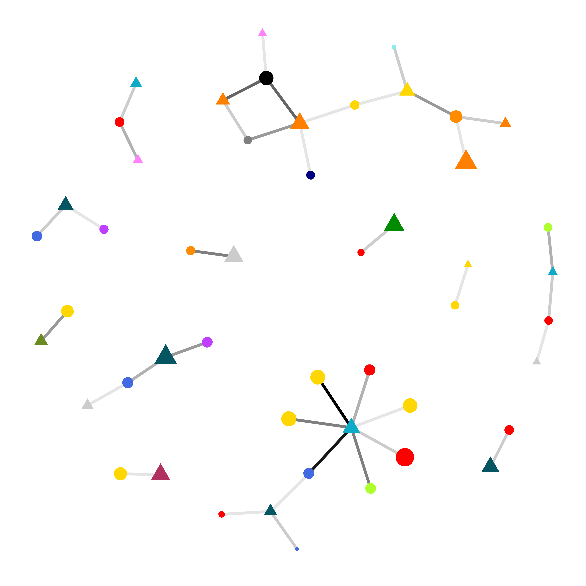
ggsave("test.png", width = 6, height = 6)
set.seed(314)
graph %>%
mutate(Genus = factor(Genus, levels = names(cyano_genus_colors))) %>%
ggraph(layout = "fr")+
geom_edge_fan(aes(alpha = weight)) +
geom_node_point(aes(color = Genus, shape = type, size = Total_Abund), key_glyph = "point") +
scale_color_manual(values = c(cyano_genus_colors, phylum_colors), na.value = "grey") +
scale_size_continuous(transform = "log10", labels = scales::unit_format(unit = "M", scale = 1e-6)) +
scale_shape_discrete(guide = FALSE) +
guides(color = guide_legend(
override.aes = list(shape = 17, size = 5))) +
labs(color = "Cyano Hub Genus")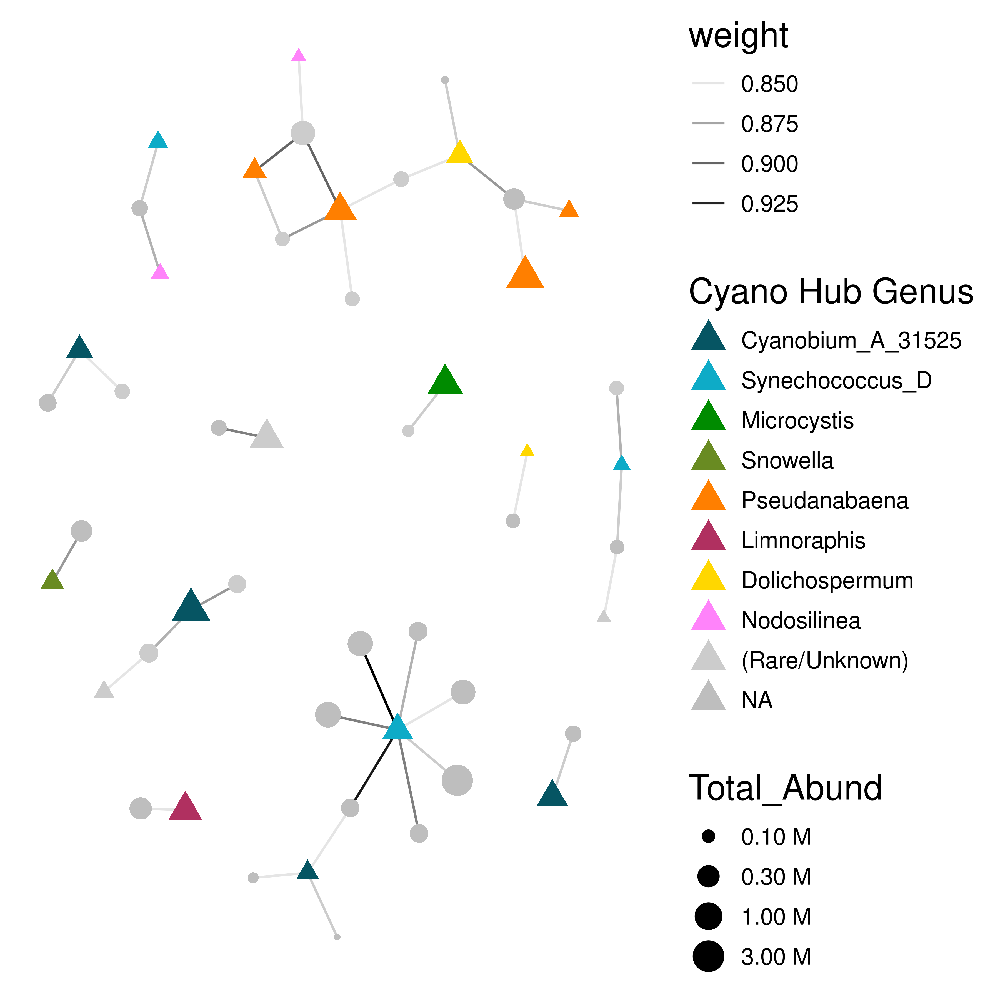
ggsave("test.png", width = 6, height = 6)
set.seed(314)
ggraph(graph, layout = "fr")+
geom_edge_fan(aes(alpha = weight), show.legend = FALSE) +
geom_node_point(aes(color = ifelse(!type, Phylum, NA), shape = type, size = Total_Abund), key_glyph = "point") +
scale_color_manual(values = c(cyano_genus_colors, phylum_colors), na.value = "grey") +
scale_size_continuous(transform = "log10", guide = FALSE) +
scale_shape_discrete(guide = FALSE) +
guides(color = guide_legend(
override.aes = list(shape = 16, size = 5))) +
labs(color = "Non-Cyano Phylum")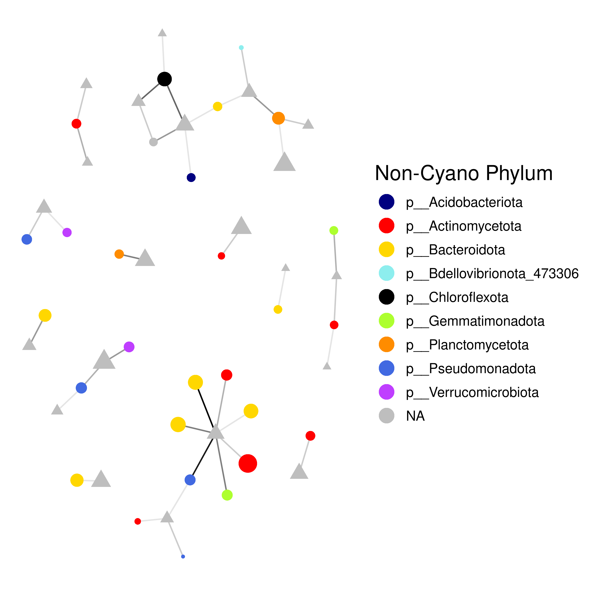
clustered <- igraph::cluster_edge_betweenness(graph)
members <- igraph::membership(clustered)
mem_df <- data.frame(name = names(members),
membership = members)
top_mem<-
mem_df %>%
count(membership) %>%
slice_max(n = 4, order_by = n) %>%
pull(membership)
good_mem_df <-
mem_df %>%
mutate(membership = ifelse(membership %in% top_mem, membership, NA),
membership = factor(membership, labels = c(1:6)))
all_clusters <- graph %>%
left_join(good_mem_df)
set.seed(314)
ggraph(all_clusters, layou = "fr")+
geom_edge_fan(aes(alpha = weight), show.legend = FALSE, linewidth = 1) +
geom_node_label(aes(label = membership, shape = type, size = Total_Abund), key_glyph = "point") +
scale_size_continuous(transform = "log10") +
scale_color_brewer(type = "qual")
scale_x_continuous(expand = expansion(.2)) <ScaleContinuousPosition>
Range:
Limits: 0 -- 1mem_graph <-
graph %>%
left_join(good_mem_df) %>%
dplyr::filter(membership %in% c(1,5))
set.seed(314)
ggraph(mem_graph, layout = "fr")+
geom_edge_fan(aes(alpha = weight), show.legend = FALSE, linewidth = 1) +
geom_node_label(aes(label = Tax_ID, size = Total_Abund, color = ifelse(type, Genus, Phylum)), label.size = NA) +
scale_size_continuous(transform = "log10") +
scale_color_manual(values = c(cyano_genus_colors, phylum_colors)) +
scale_x_continuous(expand = expansion(.2)) +
theme(legend.position = "none")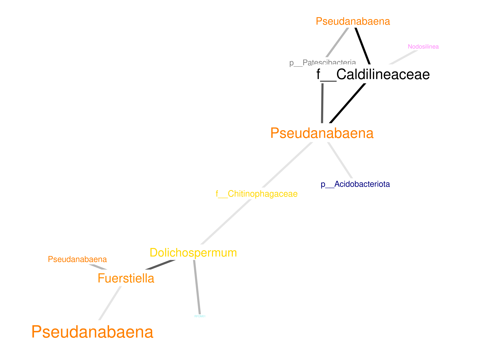
ggsave("test.png", width = 5, height = 5, dpi = 300)mem_graph <-
graph %>%
left_join(good_mem_df) %>%
dplyr::filter(membership %in% c(2,4))
set.seed(308)
ggraph(mem_graph, layout = "fr")+
geom_edge_fan(aes(alpha = weight), show.legend = FALSE,linewidth = 1) +
geom_node_label(aes(label = Tax_ID, size = Total_Abund, color = ifelse(type, Genus, Phylum)), label.size = NA) +
scale_size_continuous(transform = "log10") +
scale_color_manual(values = c(cyano_genus_colors, phylum_colors)) +
scale_x_continuous(expand = expansion(.2)) +
theme(legend.position = "none")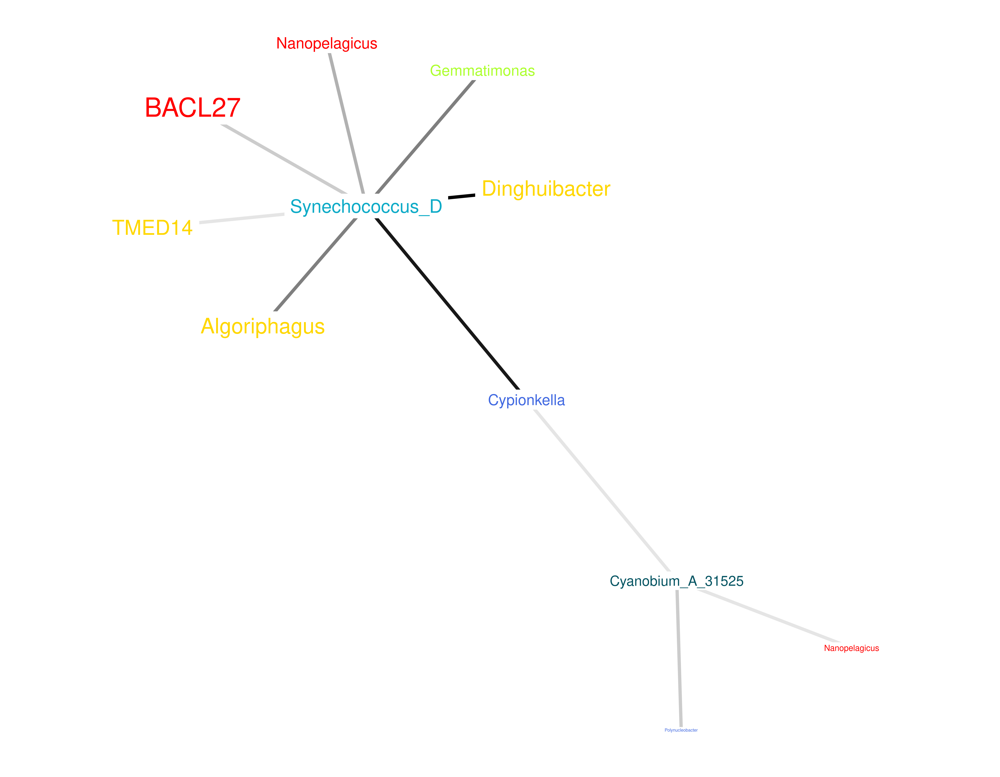
ggsave("test.png", width = 7.5, height = 5, dpi = 300)mem_graph <-
graph %>%
left_join(good_mem_df) %>%
dplyr::filter(membership %in% c(3,8))
set.seed(312)
ggraph(mem_graph, layout = "fr")+
geom_edge_fan(aes(alpha = weight), show.legend = FALSE, linewidth = 1) +
geom_node_label(aes(label = Tax_ID, size = Total_Abund, color = ifelse(type, Genus, Phylum)), label.size = NA) +
scale_size_continuous(transform = "log10") +
scale_color_manual(values = c(cyano_genus_colors, phylum_colors)) +
scale_x_continuous(expand = expansion(.3)) +
theme(legend.position = "none")
ggsave("test.png", width = 9, height = 7, dpi = 300)